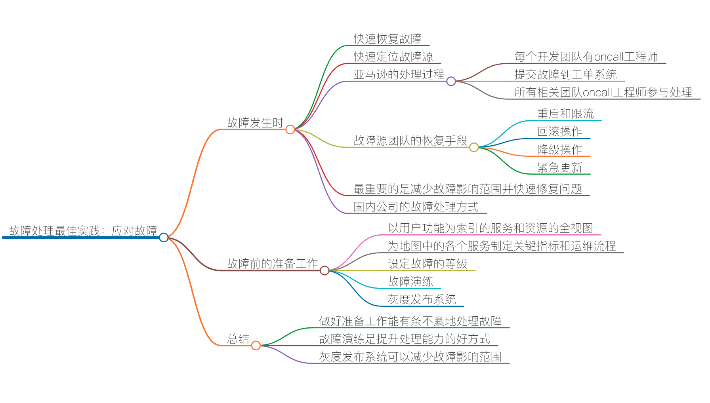

故障处理最佳实践：应对故障

或多或少我们都会经历线上的故障。在我的职业生涯中，就经历过很多的线上故障。老实说，线上故障是我们技术人员成长中必须要经历的事。从故障中我们可以吸取到很多教训，也能让我们学到很多书本上学不到的知识。坑踩多了，我们会变得越来越有经验，也就成为老司机了。
不过，我看到很多公司处理线上故障的方式并不科学，而且存在很多问题，所以，今天这节课就来分享一些我的经验。这些经验主要来自亚马逊和阿里这两家互联网公司，以及我个人的经验总结。希望这套方法能够对你有帮助。
故障发生时
在故障发生时，最重要的是快速恢复故障。而快速恢复故障的前提是快速定位故障源。因为在很多分布式系统中，一旦发生故障就会出现“多米诺骨牌效应”。也就是说，系统会随着一个故障开始一点一点地波及到其它系统，而且这个过程可能会很快。一旦很多系统都在报警，要想快速定位到故障源就不是一件简单的事了。
在亚马逊内部，每个开发团队至少都会有一位 oncall 的工程师。在 oncall 的时候，工程师要专心处理线上故障，轮换周期为每人一周。一旦发生比较大的故障，比如，S1 全部不可用，或 S2 某功能不可用，而且找不到替代方案，那么这个故障就会被提交到一个工单系统里。几乎所有相关团队 oncall 的工程师都会被叫到线上处理问题。
工作流是这样的，工程师先线上签到，然后自查自己的服务，如果自己的服务没有问题，那么就可以在旁边待命（standby），以备在需要时进行配合。如果问题没有被及时解决，就会自动升级到高层，直到 SVP 级别。
大家都知道，在亚马逊，不是按技能分工，而是按职责分工，也就是一个团队不是按前端、后端、运维等来分工，而是按所负责的 Service 来分工。
所以，亚马逊的开发人员都是前端、后端、测试、运维全部都要干的。而亚马逊内部有很多的服务，一旦出现问题，为了避免一个工单在各个团队流转，需要所有团队上线处理，这样是最快的。
如果我们的系统架构是分布式服务化的，那么一个用户的请求可能会经过很多的服务，开发和运维起来是非常麻烦的。此时，跨团队跨部门的开发和运维就变得非常重要了。
就我的经历而言，在故障发生时，亚马逊的处理过程是比较有效和快速的，尤其是能够快速地定位故障源。对于被影响的其他团队也可以做一定的处理，比如做降级处理，这样可以控制故障的范围不被扩散。
故障源团队通常会有以下几种手段来恢复系统。
重启和限流。重启和限流主要解决的是可用性的问题，不是功能性的问题。重启还好说，但是限流这个事就需要相关的流控中间件了。回滚操作。回滚操作一般来说是解决新代码的 bug，把代码回滚到之前的版本是快速的方式。降级操作。并不是所有的代码变更都是能够回滚的，如果无法回滚，就需要降级功能了。也就是说，需要挂一个停止服务的故障公告，主要是不要把事态扩大。紧急更新。紧急更新是常用的手段，这个需要强大的自动化系统，尤其是自动化测试和自动化发布系统。假如你要紧急更新 1000 多台服务器，没有一个强大的自动化发布系统是很难做到的。
也就是说，出现故障时，最重要的不是 debug 故障，而是尽可能地减少故障的影响范围，并尽可能快地修复问题。
国内的很多公司，都是由专职的运维团队来处理线上问题的。然而，运维团队通常只能处理一些基础设施方面的问题，或是非功能性的问题。对于一些功能性的问题，运维团队是完全没有能力处理的，只能通过相应的联系人，把相关的开发人员叫到线上来看。
而可能这个开发人员看到的是别的系统有问题，又会叫上其它团队的人来。所以，一级一级地传递下去，会浪费很多时间。
故障前的准备工作
为了能够在面临故障时做得有条不紊，我们需要做一些前期的准备工作。这些准备工作做得越细，故障处理起来也就越有条理。我们知道，故障来临时，一切都会变得混乱。此时，对于需要处理故障的我们来说，事可以乱，但人不能乱。如果人跟着事一起乱，那就是真正的混乱了。
所以，我们需要做一些故障前的准备工作。在这里，我给出一些我的经验。
以用户功能为索引的服务和资源的全视图。首先，我们需要一个系统来记录前端用户操作界面和后端服务，以及服务使用到的硬件资源之间的关联关系。这个系统有点像 CMDB（配置管理数据库），但是比 CMDB 要大得多，是以用户端的功能来做索引的。然后，把后端的服务、服务的调用关系，以及服务使用到的资源都关联起来做成一个视图。
这个视图最好是由相应的自动化监控系统生成。有了这个资源图后，我们就可以很容易地找到处理故障的路径了。这就好像一张地图，如果没有地图，我们只能像个无头苍蝇一样乱试了。
-
为地图中的各个服务制定关键指标，以及一套运维流程和工具，包括应急方案。以用户功能为索引，为每个用户功能的服务都制定一个服务故障的检测、处理和恢复手册，以及相关的检测、查错或是恢复的运维工具。对于基础层和一些通用的中间件，也需要有相应的最佳实践的方法。 比如 Redis，怎样检查其是否存在问题，怎样查看其健康和运行状态？哪些是关键指标，面对常见的故障应该怎么应对，服务不可用的处理方案是什么，服务需要回滚了应该怎么操作，等等。这就好像一个导航仪，能够告诉你怎么做。而没有导航仪，就没有章法，会导致混乱。 -
设定故障的等级。还要设定不同故障等级的处理方式。比如，亚马逊一般将故障分为 4 级：1 级是全站不可用；2 级是某功能不可用，且无替代方案；3 级是某功能不可用，但有替代方案；4 级是非功能性故障，或是用户不关心的故障。阿里内的分类更多样一些，有时会根据影响多少用户来定故障等级。
制定故障等级，主要是为了确定该故障要牵扯进多大规模的人员来处理。故障级别越高，牵扯进来的人就越多，参与进来的管理层级别也就越高。就像亚马逊的全员上线 oncall 一样。这就好像是我们社会中常用的“红色警报”、“橙色警报”、“黄色警报”之类的，会触发不同的处理流程。
-
故障演练。故障是需要演练的。因为故障并不会时常发生，但我们又需要不断提升处理故障的能力，所以需要经常演练。一些大公司，如 Netflix，会有一个叫 Chaos Monkey 的东西，随机地在生产线上乱来。Facebook 也会有一些故障演习，比如，随机关掉线上的一些服务器。总之，要提升故障处理水平，最好的方式就是实践。见得多了，处理得多了，才能驾轻就熟。
故障演练是一个非常好的实践。 -
灰度发布系统。要减少线上故障的影响范围，通过灰度发布系统来发布是一个很不错的方式。毕竟，我们在测试环境中很难模拟出线上环境的所有情况，所以，在生产线上进行灰度发布或是 A/B 测试是一件很好的事。
在亚马逊，发布系统中有一个叫 Weblab 的系统，就是用来做灰度发布的。另外，亚马逊全球会有多个站点。一般来说，会先发中国区。如果中国区没什么问题了，就发日本区，然后发欧洲区，最后是美国区。而如果没有很多站点的话，那么你就需要一个流量分配系统来做这个事了。
好了。今天就分享这么多。我觉得，只要能做好上面的几点，你处理起故障来就一定会比较游刃有余了。
在这节课的末尾，我想发个邀请给你。请你来聊聊，你所经历过的线上故障，以及有哪些比较好的故障处理方法。